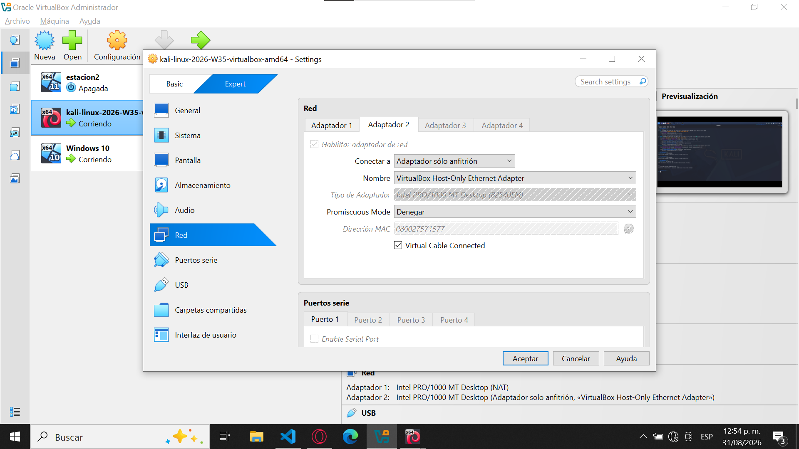
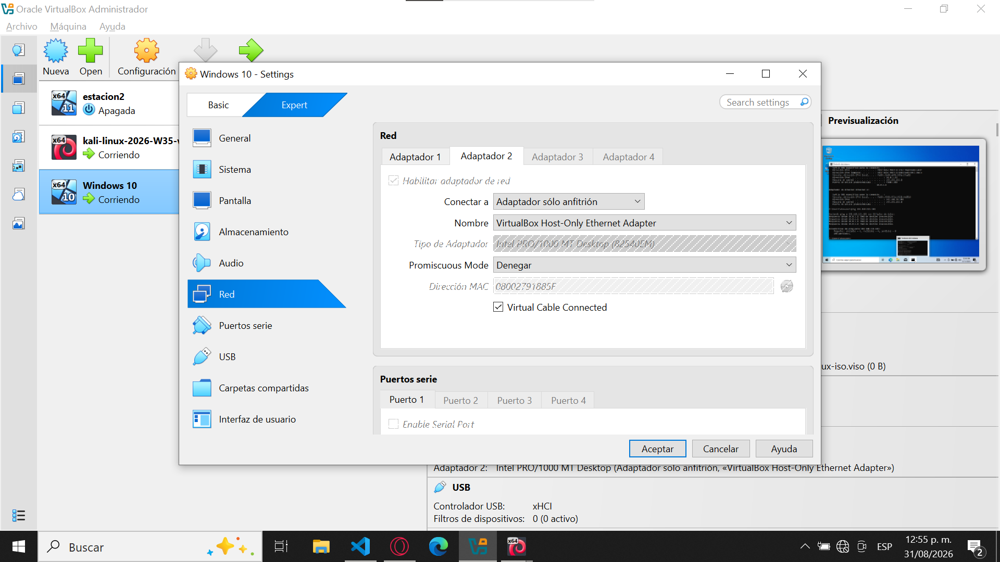
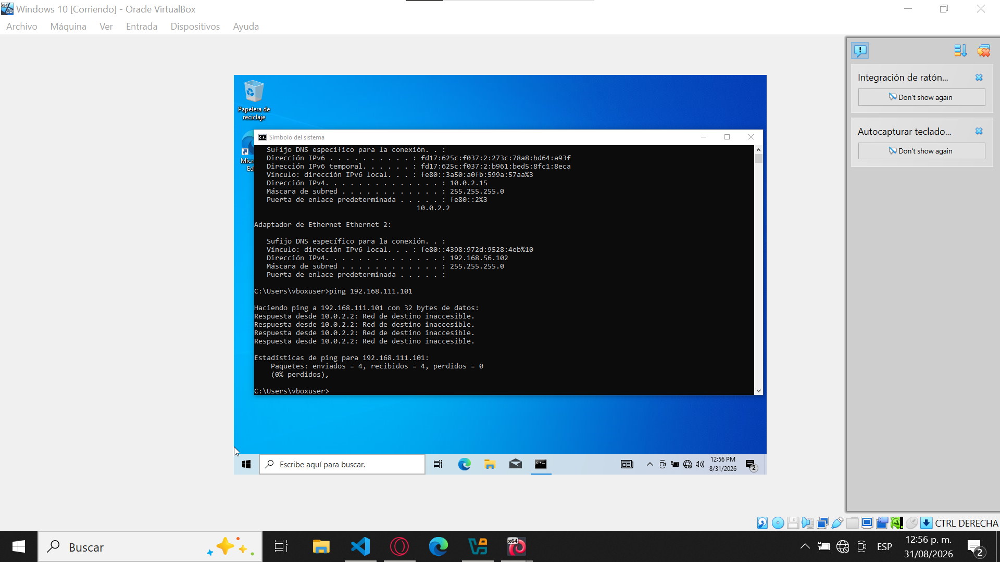
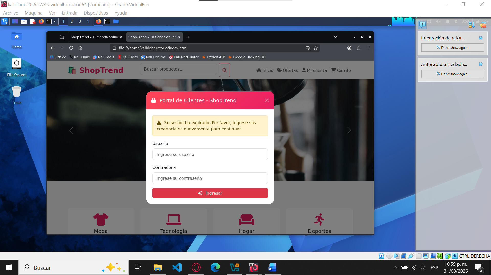
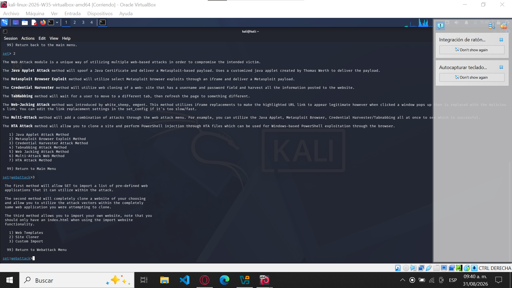
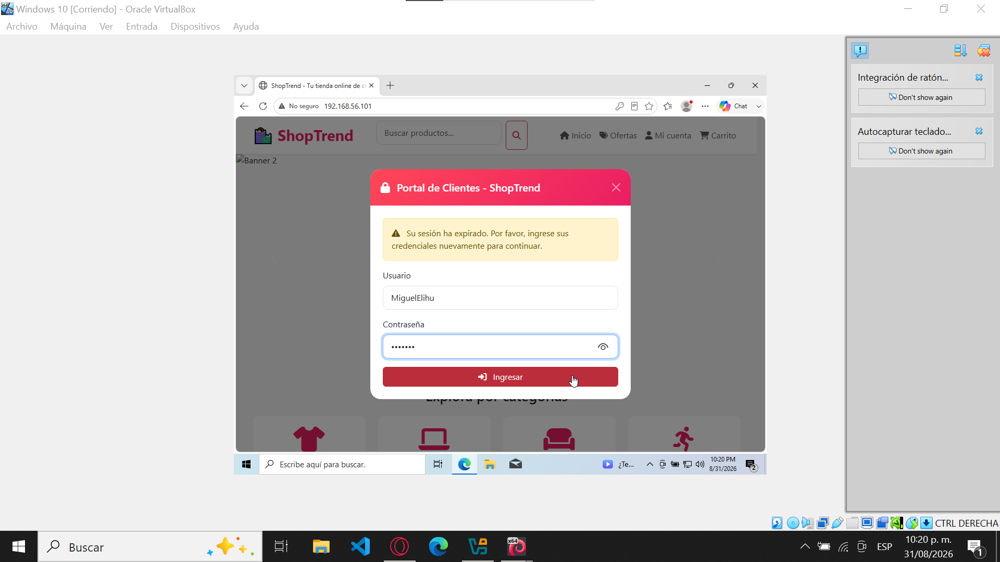
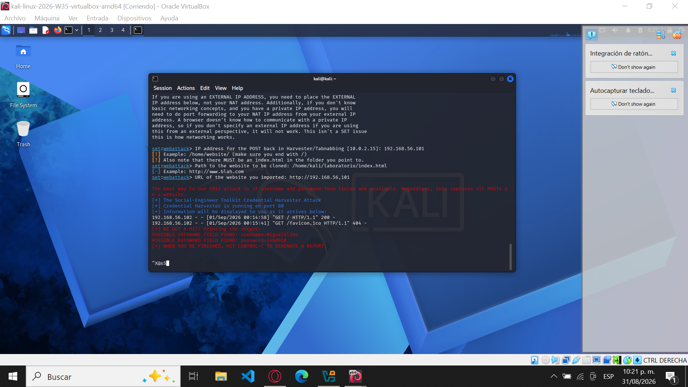

Navegación del Portafolio
Haz clic en el botón para volver al menú principal de actividades.
Documento PDF Original
A continuación se adjunta la versión oficial en formato PDF de esta práctica:
2. TABLA DE ÍNDICE
- 3. OBJETIVO DE LA ACTIVIDAD
- Objetivo general
- Objetivos específicos
- 4. DESCRIPCIÓN DEL ESCENARIO
- 5. CONFIGURACIÓN DEL LABORATORIO
- 5.1. Máquinas virtuales
- 5.2. Comunicación entre las máquinas
- 5.3. Página web utilizada
- 5.4. Social-Engineer Toolkit
- 6. EVIDENCIAS Y DESCRIPCIÓN DEL FUNCIONAMIENTO
- 6.1. Formulario de autenticación
- 6.2. Introducción de datos ficticios
- 6.3. Recepción de la información
- 7. EXPLICACIÓN DEL FLUJO DE CAPTURA DE INFORMACIÓN
- 7.1. ¿Qué es un Credential Harvester?
- 7.2. Flujo realizado en el laboratorio
- 7.3. Indicadores que permitirían detectar una página fraudulenta
- 8. CONTROLES DE SEGURIDAD PROPUESTOS
- 8.1. Capacitación de usuarios
- 8.2. Verificación de la dirección web
- 8.3. Autenticación multifactor
- 8.4. Contraseñas únicas y seguras
- 8.5. Actualización de sistemas y navegadores
- 8.6. Revisión periódica de cuentas
- 8.7. No confiar únicamente en la apariencia
- 9. CONCLUSIÓN
- 10. Referencias
3. OBJETIVO DE LA ACTIVIDAD
Objetivo general
Implementar y analizar, dentro de un entorno de laboratorio controlado, una simulación de ingeniería social utilizando Social-Engineer Toolkit (SET) y una página web ficticia diseñada específicamente para la práctica, con la finalidad de comprender el funcionamiento de una técnica de captura de información y reconocer los elementos que pueden permitir identificar un intento de phishing.
Objetivos específicos
- Configurar un escenario básico de ingeniería social utilizando Social-Engineer Toolkit (SET).
- Implementar una página web ficticia mediante el módulo Credential Harvester.
- Analizar el proceso mediante el cual la información introducida en un formulario web es transmitida y registrada por un servidor.
- Identificar indicadores técnicos y visuales que permitan reconocer una página potencialmente fraudulenta.
- Proponer controles de seguridad orientados a prevenir o reducir el impacto de ataques de phishing.
4. DESCRIPCIÓN DEL ESCENARIO
La actividad plantea un escenario en el que una organización recibe reportes de empleados relacionados con un supuesto mensaje de actualización de credenciales.
El mensaje dirige a la persona usuaria hacia un portal que aparenta pertenecer a una organización legítima. La página contiene elementos que buscan generar confianza, como un nombre institucional, campos de usuario y contraseña y un mensaje relacionado con la expiración de una sesión. Sin embargo, el portal utilizado en la simulación no pertenece realmente a la organización.
Para realizar la práctica se construyó una página web ficticia denominada ShopTrend, diseñada específicamente para el laboratorio. La página contiene un portal de acceso con los elementos solicitados:
- Nombre del sistema.
- Campo de usuario.
- Campo de contraseña.
- Botón de ingreso.
- Mensaje indicando que la sesión ha expirado.
La actividad se desarrolló exclusivamente dentro de un entorno virtual controlado, utilizando una máquina con Kali Linux y otra con Windows 10. No se utilizaron páginas pertenecientes a servicios reales ni credenciales personales.
5. CONFIGURACIÓN DEL LABORATORIO
5.1. Máquinas virtuales
Para realizar la actividad se utilizaron dos máquinas virtuales:
| Máquina | Sistema operativo | Función |
|---|---|---|
| Máquina 1 | Kali Linux | Servidor local y ejecución de SET |
| Máquina 2 | Windows 10 | Cliente utilizado para acceder a la página ficticia |
La separación entre ambas máquinas permitió realizar la simulación dentro de una red virtual controlada.


Descripción: En esta evidencia se muestra la configuración de red de la máquina Kali Linux, utilizada como equipo servidor dentro del laboratorio.
5.2. Comunicación entre las máquinas
Se verificó la comunicación entre Kali Linux y Windows 10 mediante el comando ping. La prueba permitió comprobar que ambas máquinas podían comunicarse correctamente dentro de la red virtual antes de realizar la simulación.

Descripción: La captura muestra las respuestas obtenidas al realizar una prueba de conectividad entre las máquinas virtuales, confirmando que existe comunicación dentro del entorno de laboratorio.
5.3. Página web utilizada
Se desarrolló una página web ficticia denominada Shop Trend. La página fue diseñada específicamente para la práctica y contiene una sección de inicio de sesión simulada. El formulario contiene:
- Usuario.
- Contraseña.
- Botón de ingreso.
- Mensaje de expiración de sesión.
La página fue posteriormente utilizada de manera local dentro del laboratorio.

Descripción: La evidencia muestra la página ficticia utilizada para realizar la simulación, accesible desde la máquina Windows 10 mediante el servidor local ejecutado en Kali Linux.
5.4. Social-Engineer Toolkit
En Kali Linux se inició Social-Engineer Toolkit (SET) y se accedió al apartado correspondiente a los ataques mediante sitios web.
Posteriormente se seleccionó: Website Attack Vectors → Credential Harvester Attack Method → Custom Import
La opción Custom Import permitió utilizar la página web desarrollada específicamente para el laboratorio.

Descripción: La captura muestra la configuración de SET utilizada para implementar la página ficticia dentro del laboratorio.
6. EVIDENCIAS Y DESCRIPCIÓN DEL FUNCIONAMIENTO
Una vez configurado SET, se utilizó el navegador de Windows 10 para acceder al servidor local donde se encontraba disponible la página ficticia.
Al ingresar al sitio se mostró la interfaz de Shop Trend y posteriormente el formulario de autenticación.
Descripción: Se observa la página ficticia ejecutándose desde el entorno local del laboratorio y siendo accesible desde la máquina Windows 10.
6.1. Formulario de autenticación
El formulario utilizado durante la práctica simuló un portal de inicio de sesión.
La interfaz presentó el mensaje: "Su sesión ha expirado. Por favor, ingrese sus credenciales nuevamente para continuar."
Este elemento forma parte del escenario solicitado por la actividad, cuyo propósito es representar una situación capaz de generar confianza y urgencia en una persona usuaria.
Descripción: La captura muestra el formulario utilizado durante la simulación, compuesto por los campos de usuario y contraseña y el botón de ingreso.
6.2. Introducción de datos ficticios
Para realizar la prueba se utilizaron exclusivamente datos ficticios creados para el laboratorio.
Ejemplo:
Usuario: alumno_lab
Contraseña: Prueba123!
No se utilizaron credenciales personales ni información perteneciente a terceros.

Descripción: La evidencia muestra los datos de prueba introducidos en el formulario antes de realizar el envío.
6.3. Recepción de la información
Después de enviar el formulario, la información introducida fue recibida y mostrada en la terminal de Kali Linux mediante el funcionamiento de Credential Harvester.
Esto permitió comprobar de manera práctica que la información introducida en un formulario puede ser recibida por un servidor cuando la persona usuaria interactúa con una página diseñada para este propósito.

Descripción: La captura demuestra el resultado de la simulación y permite observar en Kali Linux la información introducida mediante el formulario de prueba.
7. EXPLICACIÓN DEL FLUJO DE CAPTURA DE INFORMACIÓN
7.1. ¿Qué es un Credential Harvester?
Un Credential Harvester es una técnica utilizada para capturar información introducida por una persona usuaria en un formulario web. Dentro de una campaña de phishing, puede utilizarse como mecanismo para obtener información de autenticación cuando una persona introduce sus datos en una página fraudulenta. Su función dentro de una campaña de phishing consiste en aprovechar una página que aparenta ser legítima para inducir a la persona usuaria a proporcionar información, generalmente mediante campos de autenticación.
La actividad busca precisamente analizar esta situación mediante una página ficticia y un entorno controlado.
7.2. Flujo realizado en el laboratorio
El flujo de la práctica fue el siguiente:
- En primer lugar, Windows 10 accedió mediante el navegador a la dirección correspondiente al servidor local de Kali Linux.
- Posteriormente se mostró la página web ficticia desarrollada para la actividad. La interfaz contenía el formulario de autenticación.
- Al introducir los datos de prueba y enviar el formulario, se generó una solicitud hacia el servidor que ejecutaba SET.
- Credential Harvester procesó dicha interacción y permitió observar la información recibida en la terminal de Kali Linux.
La práctica permitió comprobar que el elemento más importante del proceso no es únicamente la apariencia de la página, sino también el comportamiento que ocurre detrás del formulario.
7.3. Indicadores que permitirían detectar una página fraudulenta
A partir de la simulación se pueden identificar diferentes indicadores que una persona usuaria debería revisar antes de proporcionar información.
- Dirección del sitio: La dirección del navegador debe revisarse cuidadosamente. Una página visualmente idéntica a una organización legítima puede utilizar una dirección diferente.
- Solicitudes inesperadas: Un mensaje que indique que una sesión expiró y solicite volver a ingresar las credenciales puede utilizarse para generar urgencia.
- Certificado y conexión: El uso de HTTPS es importante para proteger la comunicación, pero por sí solo no garantiza que un sitio sea legítimo. El material de la asignatura señala específicamente que HTTPS no autentica que un sitio sea oficial.
- Apariencia visual: Elementos como logotipos, colores, formularios y mensajes pueden utilizarse para generar confianza. Por ello, la apariencia de un sitio no debe considerarse suficiente para comprobar su autenticidad.
- Solicitud de credenciales: Una solicitud inesperada de usuario y contraseña debe considerarse un indicador de riesgo y debe verificarse antes de introducir información.
8. CONTROLES DE SEGURIDAD PROPUESTOS
La simulación permite observar cómo una persona usuaria puede ser engañada mediante una página que visualmente parece legítima. Por ello, es necesario combinar controles técnicos con medidas de concientización.
8.1. Capacitación de usuarios
Las organizaciones deben capacitar periódicamente a sus usuarios para reconocer mensajes sospechosos, páginas falsas y solicitudes inesperadas de credenciales. La capacitación debe incluir ejemplos prácticos de phishing e ingeniería social.
8.2. Verificación de la dirección web
Antes de introducir información confidencial, la persona usuaria debe verificar cuidadosamente la dirección del sitio. Una recomendación presentada en el material de la asignatura consiste en acceder directamente al espacio personal desde la URL conocida, en lugar de hacerlo mediante enlaces recibidos inesperadamente.
8.3. Autenticación multifactor
La autenticación multifactor agrega una capa adicional de protección. De esta manera, incluso si una contraseña llegara a ser obtenida mediante phishing, el atacante tendría una dificultad adicional para acceder a la cuenta.
8.4. Contraseñas únicas y seguras
Las personas usuarias deben evitar reutilizar la misma contraseña en diferentes servicios. El material de la asignatura recomienda utilizar contraseñas fuertes y diversificadas y evitar utilizar la misma contraseña para servicios diferentes.
8.5. Actualización de sistemas y navegadores
Los sistemas operativos y navegadores deben mantenerse actualizados para reducir la exposición a vulnerabilidades conocidas. El material de la asignatura también recomienda mantener actualizados tanto el sistema operativo como el navegador web.
8.6. Revisión periódica de cuentas
Es recomendable revisar periódicamente las cuentas para detectar actividades inusuales o accesos que no hayan sido realizados por la persona propietaria. Esta recomendación también forma parte del material de la asignatura.
8.7. No confiar únicamente en la apariencia
La simulación demuestra que una página puede presentar una apariencia convincente y aun así representar un riesgo. Por ello, la revisión debe considerar elementos técnicos, dirección web, contexto del mensaje y comportamiento de la página, y no únicamente su diseño visual.
9. CONCLUSIÓN
La realización de esta actividad permitió comprender de manera práctica cómo funciona una simulación de ingeniería social mediante Social-Engineer Toolkit (SET) y una página web ficticia. A través del laboratorio fue posible observar cómo la interacción con un formulario aparentemente legítimo puede provocar que la información introducida por el usuario sea recibida por el servidor.
Además, la práctica permitió identificar algunos de los riesgos asociados al phishing, especialmente cuando una página utiliza elementos visuales y mensajes que buscan generar confianza o urgencia en el usuario. Por ello, es importante verificar la dirección del sitio antes de introducir información y no confiar únicamente en la apariencia de una página.
Finalmente, se pudo comprobar la importancia de combinar medidas técnicas, como la autenticación multifactor y el uso de contraseñas seguras, con la capacitación de los usuarios para reconocer posibles intentos de phishing. De esta manera, es posible reducir la probabilidad de que este tipo de ataques tenga éxito.
10. Referencias
- Kali. (2026 de 08 de 25). Obtenido de Kali: https://www-kali-org.translate.goog/tools/set/?_x_tr_sl=en&_x_tr_tl=es&_x_tr_hl=es&_x_tr_pto=tc
- Microsoft. (s.f.). Descarga Windows 10. Obtenido de Descarga Windows 10: https://www.microsoft.com/es-mx/software-download/windows10
- Potter, S. K. (2026 de 05 de 19). Configuración de máquinas virtuales: Uso de laC para implementar máquinas virtuales consistentes y reducir la complejidad. Obtenido de Configuración de máquinas virtuales: Uso de laC para implementar máquinas virtuales consistentes y reducir la complejidad.: https://www-puppet-com.translate.goog/blog/vm-configuration?_x_tr_sl=en&_x_tr_tl=es&_x_tr_hl=es&_x_tr_pto=tc